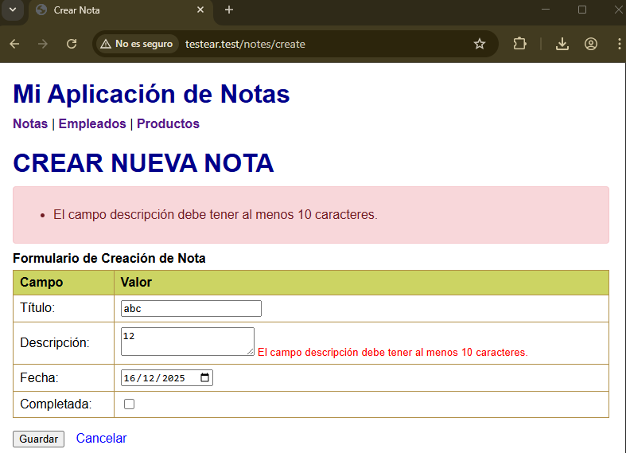

9.2. Sistema de validació¶
9.2. Sistema de validació¶
En l'apartat 1 vas veure com protegir formularis amb CSRF i bones pràctiques de seguretat. Ara és el moment d'aprofundir en el cor de la seguretat dels formularis: el sistema de validació de Laravel.
1. Fonaments de la validació¶
1.1. Què és la validació?¶
La validació és el procés de verificar que les dades complixen les regles definides abans de ser processades. És una capa de seguretat essencial que prevé errors, manté la integritat de les dades i millora l'experiència de l'usuari.
Important
Sempre hem de validar les dades abans d'emmagatzemar-les i abans d'actualitzar-les. Mai hem de suposar que allò que arriba del formulari és segur o correcte.
1.2. Tipus de validació¶
| Tipus | Descripció | Exemple |
|---|---|---|
| Frontend | Validació en el navegador | JavaScript, HTML5 |
| Backend | Validació en el servidor | Laravel Validation |
| Base de dades | Validació a nivell de BD | Constraints, Triggers |
Per què 3 capes?
- Frontend: Millora l'experiència de l'usuari (feedback immediat).
- Backend: Seguretat real (mai confiar en el client).
- Base de dades: Última defensa (per si alguna cosa falla en el backend).
La validació backend és obligatòria
MAI et fies només de la validació frontend. Un atacant pot:
- Desactivar JavaScript en el seu navegador.
- Modificar l'HTML amb les eines del navegador.
- Enviar peticions HTTP directament sense usar el teu formulari.
La validació de Laravel (backend) és la teua vertadera seguretat.
2. Sistema de validació de Laravel¶
Laravel proporciona un sistema de validació potent i expressiu que permet definir regles de manera clara i concisa. Vegem des de la validació més bàsica fins a casos avançats.
2.1. Validació bàsica¶
La manera més simple de validar dades en Laravel és usar el mètode validate() directament en el request dins del controlador.
Pots combinar múltiples regles de validació en un sol camp usant el separador | (pipe) o mitjançant un array.
Exemple 1
<?php
// Validación básica en el controlador
public function store(Request $request)
{
$validated = $request->validate([
'name' => 'required|string|max:255',
'email' => 'required|email|unique:users',
'password' => 'required|min:8|confirmed',
]);
// Los datos validados están disponibles en $validated
User::create($validated);
}
Exemple 2
<?php
$request->validate([
'name' => 'required|string|max:255|min:3',
'email' => 'required|email|unique:users,email',
'password' => 'required|string|min:8|confirmed',
'age' => 'required|integer|min:18|max:120',
'website' => 'nullable|url',
'phone' => 'nullable|regex:/^[0-9]{9}$/',
]);
Exemple 3
En els fitxers create.blade.php i edit.blade.php:
<input type="checkbox" name="done" value="1">
Este mètode permet validar directament dins del mètode del controlador:
public function store(Request $request) {
$validated = $request->validate([
'title' => 'required|string|max:255',
'description' => 'required|string|min:10',
'date_at' => 'required|date',
'done' => 'nullable|boolean'
]);
Note::create($validated);
return redirect()->route('notes.index')->with('success', 'Nota creada correctamente.');
}
Quan la validació falla, Laravel redirigix automàticament al formulari anterior. Una bona tècnica és utilitzar el mètode old() per a recuperar el valor anterior dels camps de manera que l'usuari no haja de tornar a escriure'l.
Recuperar les dades del formulari anterior
<input name="title" value="{{ old('title') }}">
Segons el tipus de camp del formulari
Farem açò en tots els camps. Compte amb els textarea, que no tenen value, i amb els checkbox.
Per exemple, per al checkbox:
<input type="checkbox" name="done" value="1" {{ old('done') ? 'checked' : '' }}>
1.
2.2. Regles de validació habituals¶
Laravel inclou dotzenes de regles de validació predefinides per als casos més habituals. Ací tens les més utilitzades:
| Regla | Descripció |
|---|---|
| Presència | |
required |
El camp és obligatori |
nullable |
El camp pot estar buit |
sometimes |
Només si existix |
| Tipus de dada | |
string |
Ha de ser una cadena de text |
integer |
Ha de ser un enter |
numeric |
Ha de ser un decimal o un enter |
boolean |
true/false, 0/1, "yes"/"no" |
date |
Ha de ser una data vàlida |
array |
Array |
| Longitud / mida | |
min:n |
Longitud mínima de caràcters |
max:n |
Longitud màxima de caràcters |
size:n |
Mida exacta |
| Valors permesos | |
in:a,b,c |
Llista |
not_in |
Exclusió |
| Format | |
email |
Correu electrònic vàlid |
url |
URL |
regex |
Expressió regular |
| Base de dades | |
unique:notes,title |
Únic |
exists:users,id |
Existix |
| Fitxers | |
file |
Fitxer |
image |
Imatge |
mimes:jpg,png |
Extensió |
max:2048 |
Mida (KB) |
3. Validació avançada¶
Les aplicacions reals sovint requerixen la validació d'estructures complexes: arrays de dades, camps condicionals i fitxers amb requisits específics.
3.1. Validació d'arrays¶
Quan el teu formulari envia múltiples elements (com una llista de productes o etiquetes), Laravel pot validar cada element de l'array individualment usant la notació amb asterisc *.
<?php
// Validación de arrays
$request->validate([
'tags' => 'array',
'tags.*' => 'exists:tags,id',
'products' => 'array|min:1',
'products.*.name' => 'required|string',
'products.*.price' => 'required|numeric|min:0',
]);
'tags' => 'array'Indica que el camp tags ha de ser un array.'tags.*' => 'exists:tags,id'L'asterisc (*) significa "cada element de l'array". Esta regla valida que cada element dins de l'array tags existisca en la columna id de la taula tags en la base de dades.'products' => 'array|min:1'El camp products també ha de ser un array, i a més ha de contindre almenys 1 element (min:1).'products.*.name' => 'required|string'Valida que cada producte dins de l'array tinga un camp name obligatori i de tipus text (string).'products.*.price' => 'required|numeric|min:0'Valida que cada producte tinga un camp price: obligatori (required), numèric (numeric) i amb un valor mínim de 0 (no negatiu).
3.2. Validació condicional¶
A vegades necessites validar un camp només si es complix una certa condició. Per exemple, demanar el nom de l'empresa només si el tipus d'usuari és "empresa".
<?php
// Validación condicional
$request->validate([
'type' => 'required|in:individual,company',
'company_name' => 'required_if:type,company|string|max:255',
'tax_id' => 'required_if:type,company|string|max:20',
]);
'type' => 'required|in:individual,company'El camp type és obligatori (required). El seu valor només pot ser "individual" o "company" (in:individual,company).'company_name' => 'required_if:type,company|string|max:255'El camp company_name només és obligatori si el camp type té el valor "company".'tax_id' => 'required_if:type,company|string|max:20'També és obligatori només si type = company. Ha de ser una cadena de text amb un màxim de 20 caràcters (per exemple, un NIF o CIF).
3.3. Validació de fitxers¶
La validació de fitxers és crítica per a la seguretat. Laravel proporciona regles específiques per a verificar el tipus, la mida i les dimensions dels fitxers pujats.
<?php
// Validación de archivos
$request->validate([
'image' => 'required|image|mimes:jpeg,png,jpg|max:2048',
'document' => 'nullable|file|mimes:pdf,doc,docx|max:10240',
'avatar' => 'nullable|image|dimensions:min_width=100,min_height=100',
]);
4. Regles personalitzades¶
Laravel proporciona desenes de regles de validació predefinides, però a vegades necessites crear regles específiques per a la teua aplicació.
4.1. Crear regles personalitzades¶
Quan les regles predefinides de Laravel no cobrixen les teues necessitats específiques, pots crear les teues pròpies regles de validació personalitzades. Això és útil per a validacions complexes de negoci que requerixen una lògica específica de la teua aplicació.
<?php
// Crear regla personalizada
php artisan make:rule StrongPassword
<?php
namespace App\Rules;
use Illuminate\Contracts\Validation\Rule;
class StrongPassword implements Rule
{
public function passes($attribute, $value)
{
return preg_match('/^(?=.*[a-z])(?=.*[A-Z])(?=.*\d)(?=.*[@$!%*?&])[A-Za-z\d@$!%*?&]{8,}$/', $value);
}
public function message()
{
return 'La contraseña debe contener al menos 8 caracteres, una mayúscula, una minúscula, un número y un carácter especial.';
}
}
4.2. Usar regles personalitzades¶
Una vegada creada la regla personalitzada, pots usar-la com qualsevol altra regla de validació de Laravel.
<?php
use App\Rules\StrongPassword;
$request->validate([
'password' => ['required', new StrongPassword],
]);
4.3. Regles amb paràmetres¶
Les regles personalitzades poden acceptar paràmetres en el seu constructor, cosa que permet crear validacions més flexibles i reutilitzables.
<?php
namespace App\Rules;
use Illuminate\Contracts\Validation\Rule;
class NotBlacklisted implements Rule
{
protected $blacklist;
public function __construct($blacklist = [])
{
$this->blacklist = $blacklist;
}
public function passes($attribute, $value)
{
return !in_array(strtolower($value), $this->blacklist);
}
public function message()
{
return 'El valor no está permitido.';
}
}
4.4. Crear una classe FormRequest personalitzada¶
Comandament
php artisan make:request NoteRequest
Això crearà una classe en app/Http/Requests/NoteRequest.php.
Mètode authorize()
Este mètode definix si l'usuari té permís per a fer esta petició. Per a este curs el deixarem en true:
Important
Si este mètode retorna false, la validació no s'executarà i es llançarà un error 403 (Forbidden).
Autoritzar la petició
public function authorize() {
return true;
}
Mètode rules()
Ara definirem unes regles de validació d'exemple per a notes:
Exemple de regles
public function rules() {
return [
'title' => 'required|string|max:255',
'description' => 'required|string|min:10',
'date_at' => 'required|date',
'done' => 'nullable|boolean'
];
}
Ús en el controlador:
En el controlador, en compte d'usar Request $request, usarem NoteRequest $request. Laravel s'encarregarà de validar automàticament les dades abans d'executar el mètode.
Emmagatzemar una nota
//...
use App\Http\Requests\NoteRequest;
//...
public function store(NoteRequest $request) {
$data = $request->all();
$data['done'] = $request->has('done') ? 1 : 0; // Convertir checkbox a booleano
Note::create($data);
return redirect()->route('notes.index');
}
Abans de modificar l'update(), recorda que en la vista d'edició el checkbox s'envia com done=on o no s'envia res. Fem en esta vista el mateix que en la de creació:
<input type="checkbox" name="done" value="1" {{ ($note->done) ? 'checked' : '' }}>
Fem el mateix per al mètode update():
Actualitzar una nota
public function update(NoteRequest $request, Note $note) {
$note->update($request->all());
return redirect()->route('notes.index');
}
5. Gestió d'errors¶
Quan la validació falla, Laravel redirigix automàticament l'usuari de tornada al formulari amb els errors. És crucial mostrar estos errors de manera clara perquè l'usuari sàpia què ha de corregir.
5.1. Mostrar errors en Blade¶
<!-- Mostrar errores específicos -->
<div>
<label for="name">Nombre</label>
<input type="text" id="name" name="name"
class="@error('name') border-red-500 @enderror"
value="{{ old('name') }}">
@error('name')
<p class="text-red-600 text-sm mt-1">{{ $message }}</p>
@enderror
</div>
<!-- Mostrar todos los errores -->
@if($errors->any())
<div class="alert alert-danger">
<ul>
@foreach($errors->all() as $item)
<li>{{ $item }}</li>
@endforeach
</ul>
</div>
@endif
5.2. Mostrar tots els errors junts¶
Per a mostrar tots els errors en la part superior del formulari:
@if ($errors->any())
<div class="alert alert-danger">
<ul>
@foreach ($errors->all() as $item)
<li>{{ $item }}</li>
@endforeach
</ul>
</div>
@endif
5.3. Missatges personalitzats¶
Els missatges d'error predeterminats de Laravel estan en anglés. Pots personalitzar-los perquè siguen més específics i adequats a la teua aplicació.
<?php
// Mensajes personalizados
$request->validate([
'email' => 'required|email',
'password' => 'required|min:8',
], [
'email.required' => 'El campo email es obligatorio.',
'email.email' => 'El email debe tener un formato válido.',
'password.required' => 'La contraseña es obligatoria.',
'password.min' => 'La contraseña debe tener al menos 8 caracteres.',
]);
5.4. Atributs personalitzats¶
En compte de personalitzar cada missatge, pots canviar com anomena Laravel els camps en els missatges d'error.
<?php
// Atributos personalizados
$request->validate([
'first_name' => 'required|string',
'last_name' => 'required|string',
], [], [
'first_name' => 'nombre',
'last_name' => 'apellido',
]);
5.5. Ressaltar camps amb error (CSS)¶
També pots afegir una classe CSS al camp si té un error, per a destacar-lo visualment segons el disseny de l'aplicació:
Ressaltar camps amb CSS
<input name="title" class="@error('title') is-invalid @enderror">
I després, en CSS, pots donar estil a la classe .is-invalid.
5.6. Modificar la vista de creació i la vista d'edició¶
Vista de creació create.blade.php
@extends('layouts.app')
@section('title', 'Crear nueva Nota')
@section('content')
<h2>Editar Nota</h2>
<form action="{{ route('notes.store') }}" method="POST">
@csrf
<label>Título:</label>
<input type="text" name="title" value="{{ old('title') }}" required>
@error('title')
<small style="color:red">{{ $message }}</small>
@enderror
<label>Descripción:</label>
<textarea name="description" required>{{ old('description') }}</textarea>
@error('description')
<small style="color:red">{{ $message }}</small>
@enderror
<label>Fecha:</label>
<input type="date" name="date_at" value="{{ old('date_at') }}" required>
@error('date_at')
<small style="color:red">{{ $message }}</small>
@enderror
<label>Completada:</label>
<input type="checkbox" name="done" {{ old('done') ? 'checked' : '' }}>
@error('done')
<small style="color:red">{{ $message }}</small>
@enderror
<button type="submit">Guardar</button>
<a href="{{ route('notes.index') }}">Cancelar</a>
</form>
@endsection
Vista d'edició edit.blade.php
@extends('layouts.app')
@section('title', 'Editar Nota')
@section('content')
<h2>Editar Nota</h2>
<form action="{{ route('notes.update', $note->id) }}" method="POST">
@csrf
@method('PUT')
<label>Título:</label>
<input type="text" name="title" value="{{ $note->title }}" required>
@error('title')
<small style="color:red">{{ $message }}</small>
@enderror
<label>Descripción:</label>
<textarea name="description" required>{{ $note->description }}</textarea>
@error('description')
<small style="color:red">{{ $message }}</small>
@enderror
<label>Fecha:</label>
<input type="date" name="date_at" value="{{ $note->date_at }}" required>
@error('date_at')
<small style="color:red">{{ $message }}</small>
@enderror
<label>Completada:</label>
<input type="checkbox" name="done" {{ $note->done ? 'checked' : '' }}>
@error('done')
<small style="color:red">{{ $message }}</small>
@enderror
<button type="submit">Actualizar</button>
<a href="{{ route('notes.index') }}">Cancelar</a>
</form>
@endsection
Alguns mètodes interessants de Laravel que no hem utilitzat però que s'usen sovint són:
| Classe | Mètode | Descripció |
|---|---|---|
Illuminate\Support\Facades\Validator |
make() |
Crear un validador |
Illuminate\Support\Facades\Validator |
fails() |
Verificar si la validació ha fallat |
Illuminate\Support\Facades\Validator |
errors() |
Obtindre els errors de validació |
Illuminate\Support\Facades\Validator |
validate() |
Validar i redirigir automàticament |
Illuminate\Support\Facades\Request |
old() |
Obtindre el valor anterior d'un camp |
Illuminate\Support\Facades\Request |
flash() |
Guardar dades en la sessió per a la petició següent |
PRÀCTICA 3
Ara provarem de crear una nota amb una descripció inferior als 10 caràcters i veurem el missatge d'error.

descripciónAra podeu comprovar que:
- En l'edició, les validacions i els missatges d'èxit funcionen igual.
- El camp ´done´ funciona correctament tant en la creació com en l'edició.
camp done
Si has seguit al peu de la lletra les instruccions, el camp done no funcionarà. En afegir la classe NoteRequest demanem que el camp siga boolean, però en este punt està arribant un on quan el checkbox està marcat, o res quan no ho està; i, per tant, no arribarem mai a executar el mètode store() o update(), que és on gestionàvem el valor del checkbox.
Solució
Necessitem que, quan es valida el camp done, si està marcat, arribe com true i, si no està marcat, com false, ja que en la validació hem especificat que ha de ser un booleà. Per a això usarem el mètode prepareForValidation(), que ens permet modificar les dades abans que s'apliquen les regles de validació.
Este mètode prepareForValidation és molt útil per a modificar qualsevol dada abans que s'aplique la validació. Per exemple, podríem usar-lo per a formatar dates o convertir cadenes a majúscules/minúscules. No sempre la informació que arriba del formulari està en el format que necessitem per a validar o emmagatzemar. I que no estiga en el format no significa que no siga vàlida. Però la validació de laravel és estricta i hem d'assegurar-nos que les dades complixen les regles que hem definit.
Modificar dades abans de validar
Afegim este mètode en la classe NoteRequest.
protected function prepareForValidation() {
$this->merge([
'done' => $this->done ? true : false,
]);
}
D'esta manera ens assegurem que el camp done sempre arriba com 1 o 0 i, per tant, la validació funciona correctament. Amb això, ara el camp done funciona correctament.
5.7. Traduir els missatges d'error¶
Laravel porta els seus missatges d'error per defecte en anglés.
1) Activa l'idioma per defecte en config/app.php:
'locale' => 'es',
2) Fitxer per defecte: resources/lang/en/validation.php (les últimes versions no porten este fitxer).
3) Pots crear una versió en espanyol copiant el contingut en: resources/lang/es/validation.php
<?php
return [
'required' => 'El campo :attribute es obligatorio.',
'string' => 'El campo :attribute debe ser una cadena de texto.',
'date' => 'El campo :attribute no es una fecha válida.',
'boolean' => 'El campo :attribute debe ser verdadero o falso.',
'numeric' => 'El campo :attribute debe ser numérico',
'max' => [
'numeric' => 'El campo :attribute debe como máximo :max.',
'string' => 'El campo :attribute no puede tener más de :max caracteres.',
],
'min' => [
'string' => 'El campo :attribute debe tener al menos :min caracteres.',
'numeric' => 'El campo :attribute debe como valor mínimo :min.',
],
'attributes' => [
'title' => 'título',
'description' => 'descripción',
'date_at' => 'fecha',
'done' => 'realizada',
'name' => 'nombre',
'price' => 'precio'
],
];
6. Validació en formularis¶
La validació es pot aplicar tant en el frontend (navegador) com en el backend (Laravel). Totes dues són complementàries i necessàries.
6.1. Validació frontend amb HTML5¶
HTML5 proporciona una validació bàsica en el navegador abans d'enviar el formulari, i millora l'experiència de l'usuari amb un feedback immediat.
<!-- Validación HTML5 -->
<form>
<input type="text" name="name" required minlength="3" maxlength="255">
<input type="email" name="email" required>
<input type="password" name="password" required minlength="8">
<input type="number" name="age" min="18" max="120">
<input type="url" name="website">
<input type="tel" name="phone" pattern="[0-9]{9}">
</form>
6.2. Validació amb JavaScript¶
Per a validacions més complexes o personalitzades en el frontend, pots usar JavaScript pur. Això et permet crear regles específiques i proporcionar un feedback immediat mentre l'usuari omple el formulari.
// Validación con JavaScript
function validateForm() {
const name = document.getElementById('name').value;
const email = document.getElementById('email').value;
const password = document.getElementById('password').value;
if (name.length < 3) {
showError('name', 'El nombre debe tener al menos 3 caracteres');
return false;
}
if (!isValidEmail(email)) {
showError('email', 'El email no es válido');
return false;
}
if (password.length < 8) {
showError('password', 'La contraseña debe tener al menos 8 caracteres');
return false;
}
return true;
}
function isValidEmail(email) {
const emailRegex = /^[^\s@]+@[^\s@]+\.[^\s@]+$/;
return emailRegex.test(email);
}
6.3. Validació en temps real¶
La validació en temps real proporciona un feedback instantani mentre l'usuari interactua amb el formulari. S'activa en eixir d'un camp (esdeveniment blur) o mentre escriu (esdeveniment input), i millora significativament l'experiència de l'usuari.
// Validación en tiempo real
document.getElementById('email').addEventListener('blur', function() {
const email = this.value;
if (email && !isValidEmail(email)) {
showError('email', 'El email no es válido');
} else {
clearError('email');
}
});
7. Validació de relacions¶
Quan treballes amb bases de dades relacionals, és crucial validar que les referències entre taules siguen vàlides abans de crear o actualitzar registres.
7.1. Validació de claus foranes¶
La regla exists verifica que un valor existisca en una taula específica abans de permetre'n l'ús com a clau forana. Això prevé errors d'integritat referencial.
<?php
// Validar que la categoría existe
$request->validate([
'category_id' => 'required|exists:categories,id',
'tags' => 'array',
'tags.*' => 'exists:tags,id',
]);
7.2. Validació de relacions Molts a Molts¶
En relacions molts a molts (com productes i etiquetes), necessites validar arrays d'IDs per a assegurar que tots els elements relacionats existisquen en les seues taules respectives.
<?php
// Validar etiquetas de producto
$request->validate([
'product_id' => 'required|exists:products,id',
'tags' => 'array|min:1',
'tags.*' => 'exists:tags,id',
]);
7.3. Validació d'unicitat amb condicions¶
En editar registres, necessites validar la unicitat però excloent el registre actual. Laravel permet afegir excepcions i condicions addicionals a la regla unique.
<?php
// Validar unicidad con condiciones
$request->validate([
'email' => 'required|email|unique:users,email,' . $user->id,
'slug' => 'required|unique:products,slug,' . $product->id . ',id,category_id,' . $request->category_id,
]);
8. Validació de formularis complexos¶
Els formularis del món real sovint combinen múltiples tipus de dades: informació bàsica, relacions, fitxers i inventari. Ací veuràs exemples complets de validació per a estos casos.
8.1. Formulari de producte amb inventari¶
Un formulari complet de producte inclou dades bàsiques, relacions amb categories i etiquetes, control d'inventari i fitxers. Totes estes validacions han de treballar conjuntament.
<?php
// Validación completa de producto
$request->validate([
// Datos del producto
'name' => 'required|string|max:255',
'description' => 'required|string|max:1000',
'price' => 'required|numeric|min:0|max:999999.99',
'category_id' => 'required|exists:categories,id',
// Etiquetas
'tags' => 'array',
'tags.*' => 'exists:tags,id',
// Inventario
'quantity' => 'required|integer|min:0',
'location' => 'required|string|max:255',
'reorder_level' => 'required|integer|min:0',
// Archivo
'image' => 'nullable|image|mimes:jpeg,png,jpg|max:2048',
]);
8.2. Validació de formularis niats¶
Els formularis poden enviar dades en estructures niades (arrays dins d'arrays). Laravel permet validar cada nivell de niament usant la notació de punt.
<?php
// Validación de formularios anidados
$request->validate([
'user' => 'required|array',
'user.name' => 'required|string|max:255',
'user.email' => 'required|email|unique:users,email',
'user.profile' => 'required|array',
'user.profile.bio' => 'nullable|string|max:500',
'user.profile.avatar' => 'nullable|image|max:1024',
]);
9. Millors pràctiques¶
Per a mantindre el teu codi net, mantenible i escalable, és important seguir les millors pràctiques de validació que proposa Laravel.
9.1. Validació en el controlador¶
La manera més directa de validar és fer-ho en el mètode del controlador. És apropiada per a validacions senzilles que no es reutilitzen en múltiples llocs.
<?php
// Validación en el controlador
public function store(Request $request)
{
$validated = $request->validate([
'name' => 'required|string|max:255',
'email' => 'required|email|unique:users',
]);
// Usar solo datos validados
$user = User::create($validated);
return redirect()->route('users.show', $user)
->with('success', 'Usuario creado exitosamente');
}
9.2. Validació en Form Requests¶
Form Requests: organitzar la validació complexa
Quan un formulari té moltes regles de validació, és millor pràctica crear una classe Form Request dedicada en compte de tindre-ho tot en el controlador.
Avantatges:
✅ Codi net: El controlador es manté senzill.
✅ Reutilitzable: Pots usar la mateixa validació en múltiples mètodes.
✅ Autorització integrada: Pots verificar permisos en el mateix lloc.
✅ Missatges centralitzats: Tots els missatges d'error en un sol fitxer.
✅ Testing més fàcil: Pots provar la validació de manera aïllada.
// Crear Form Request
php artisan make:request StoreProductRequest
<?php
namespace App\Http\Requests;
use Illuminate\Foundation\Http\FormRequest;
class StoreProductRequest extends FormRequest
{
public function authorize()
{
return true;
}
public function rules()
{
return [
'name' => 'required|string|max:255',
'description' => 'required|string|max:1000',
'price' => 'required|numeric|min:0',
'category_id' => 'required|exists:categories,id',
];
}
public function messages()
{
return [
'name.required' => 'El nombre del producto es obligatorio.',
'price.min' => 'El precio debe ser mayor a 0.',
];
}
}
9.3. Usar Form Requests en controladors¶
<?php
// Usar Form Request en el controlador
public function store(StoreProductRequest $request)
{
$validated = $request->validated();
$product = Product::create($validated);
return redirect()->route('products.show', $product);
}